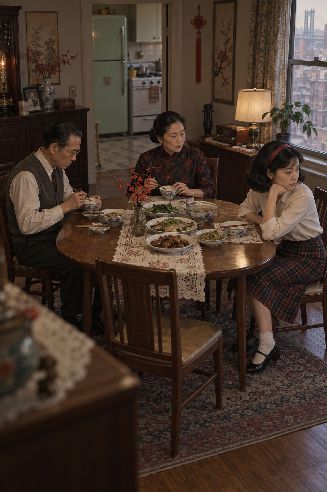

内容简介
伟成和依萍在美国成家立业，在纽约近郊一个小城镇里过着优裕的生活。然而，由于两人的教育经历和来美时间不同，他们对于美国生活方式以及教育孩子产生了很大差异。伟成认为既然生活在美国，就应该适应当地的生活；依萍却坚持中国传统文化。最令依萍震怒的是，女儿宝莉竟然不承认自己是中国人。
小说通过宝莉与玩伴的争执，以及家庭成员之间的日常互动，展现移民家庭在文化认同上的代际冲突。
從一座看似完美的小城，讀出移民家庭的孤獨、文化身份與母女之間難以說出的矛盾。
建議按「讀前準備 → 分段細讀 → 讀後整理」的順序學習。點擊下面任何一張卡片，就能直接進入那個部分。
聽原文朗讀；選取文字用粗體、下劃線、顏色作筆記；用 A−／A／A＋ 調整字號或全屏閱讀；選詞加入詞彙表；在右側寫翻譯或自己的理解，並匯出本段筆記和回答。
《安乐乡的一日》通过一个移居美国的华人家庭，呈现移民社会中的文化差异、代际冲突和身份认同问题。
作品首次发表于1964年10月《现代文学》第二十二期，后收入《寂寞的十七岁》。
伟成和依萍在美国成家立业，在纽约近郊一个小城镇里过着优裕的生活。然而，由于两人的教育经历和来美时间不同，他们对于美国生活方式以及教育孩子产生了很大差异。伟成认为既然生活在美国，就应该适应当地的生活；依萍却坚持中国传统文化。最令依萍震怒的是，女儿宝莉竟然不承认自己是中国人。
小说通过宝莉与玩伴的争执，以及家庭成员之间的日常互动，展现移民家庭在文化认同上的代际冲突。
《安乐乡的一日》是白先勇创作的短篇小说，属于白先勇“纽约客”系列中书写旅美华人命运与心理的作品。小说以20世纪60年代移居美国的台湾家庭为背景，聚焦华人移民在异质文化环境中的生活选择和身份认同。
安乐乡是纽约市近郊的一座小城镇，居民多为在纽约市工作的中上阶级。这里收入稳定、住宅整齐、生活优裕，代表着美国中产阶级理想化的郊区生活。
可是，“安乐乡”的安定也带有反讽意味。整洁、秩序和富裕的外表之下，人物仍然感到孤独、疏离和难以真正融入环境。
小说中的家庭同时处在中国传统和美国社会之间。家庭空间里既有中式家具、瓷器和生活习惯，也有美国式住宅、家电和日常生活方式。
这种中西并置说明，移民家庭并不是简单地从一种文化进入另一种文化，而是在同一个家庭中不断协商、调整和冲突。
伟成和依萍在美国成家立业，但两人的教育经历和来美时间不同，因此对美国生活方式和教育孩子有不同看法。
伟成认为既然生活在美国，就应该适应当地的生活；依萍则坚持中国文化和家庭传统。女儿宝莉在美国出生、成长并接受美国教育，更接近美国主流文化。当宝莉不承认自己是中国人时，家庭内部的文化差异转化为直接的情感冲突。

作品所讨论的身份问题，与20世纪60年代台湾人移民美国的历史处境有关。移民第一代需要面对母体文化与美国主流文化的碰撞；第二代和第三代虽然接受美国教育，却仍可能因为族裔身份而被主流社会区别对待。
与此同时，部分年轻移民又逐渐失去与中国文化的直接联系，不愿承认自己的华裔身份。社会如何看待一个人，以及一个人如何理解自己，之间可能出现无法轻易解决的矛盾。
白先勇在美国生活期间，亲身经历了异质文化环境与中国传统文化之间的撞击。他也曾在观看中国历史文献片后走出美国电影院，在纽约街头产生不知身在何处的茫然感。这种文化经验成为他书写旅美华人心理和身份困境的重要背景。
小说通过一个家庭的日常冲突，呈现更广泛的移民处境：第一代难以完全融入，第二代又可能与原有文化传统断裂。
《安乐乡的一日》是海外华文文学中探讨文化身份和移民认同的代表性作品之一。作品没有把“保留传统”或“完全美国化”简单地写成唯一答案，而是展示人物在家庭、社会和个人身份之间的复杂选择。
详细的人物性格、写作手法、矛盾发展和主题分析，将在后面的 Guiding Questions 中完成。
從人物的家庭位置、文化選擇和身份認同，理解作品中的代際衝突。
核心人物｜妻子與母親
依萍出身中國世家，自幼接受嚴格家教，移居美國前已深入習得中華文化的生活規範。多年在美國生活後，她反而更加確認自己是中國人，並努力維持中國女性的生活方式。
她事事小心、處處謹慎。每逢鄰居聚會，她會穿上旗袍、放柔聲音，耐心回答鄰居太太對中國風俗的問題。然而，這種刻意展示中國特徵的行為，也讓她感到自己被美國人當成「他者」來觀看。鄰居的熱情和好奇，反而提醒她自己與周圍社區的不同。
依萍無法真正融入安樂鄉，在家庭中也因丈夫和女兒逐漸美國化而感到孤獨、不合時宜。她代表對中華文化傳統具有強烈民族意識、卻難以接受身份轉變的第一代移民。
代表形象：穿旗袍站在廚房窗邊，在中國傳統與美國生活之間等待和徘徊。
重要配角｜女兒與第二代移民身份的象徵
寶莉出生、成長並接受教育於美國。除外貌之外，她與其他美國孩子沒有明顯不同；學校教育和日常社交使她自然認同自己的美國人身份。
雖然她從母親的言傳身教中接觸過一些中華文化，但由於缺少與中國歷史和生活的直接經驗，她與傳統文化之間存在明顯的距離。她不熟悉、也不願意接受母親所重視的中國家庭規範。
當玩伴指出她是中國人時，寶莉把這句話理解為侮辱，激烈地否認：「我不是中國人！我不是中國人！」她的反應表現出第二代移民的文化斷裂，也呈現美國身份認同與外部族裔標籤之間的張力。
代表形象：穿著美式服裝、使用英文，親近父親，卻在族裔身份問題上感到不安。
重要配角｜丈夫與父親
偉成在經歷東西文化的衝撞後，認為要在美國生活，就應該適應當地的生活方式。他帶全家搬到安樂鄉這個典型的白人社區，在家中和寶莉講英文，也鼓勵依萍參加鄰居的社交活動。
偉成的選擇不是單純背叛中華傳統，而是出於一種理性的實用考量。他清楚知道，在美國社會中，中華傳統文化處於弱勢位置；與其抵抗環境，不如學習當地習俗，使自己和家人更容易生活和融入社會。
他重視生活便利和家庭快樂，也相信寶莉應該接受美國教育、適應美國社會。偉成代表華人移民中較為實用和調適的一種身份認同觀念，與依萍的傳統堅守形成對比。
代表形象：穿鹿皮大衣、帶著公文包回家，在中國家庭傳統和美國生活方式之間作出實際選擇。
選擇最有文本根據的主題，不必勉強覆蓋所有主題。
依萍和寶莉對「中國人／美國人」的不同理解，呈現語言、家庭和成長環境如何影響身份。
移民生活、文化適應和家庭經驗塑造了依萍的恐懼，也影響寶莉的選擇。
家庭角色、性別分工、社區規範和學校群體共同形成身份壓力。
把你在各部分寫下的答案，整理成 3–4 分鐘的口頭表達。
作品、作者、節選情境、主要內容和核心衝突。
選擇兩至三個細節，說明寫作手法、效果和意義。
連結人物、IB 主題、文化背景和自己的觀點。
總結作者如何透過寫作手法表達中心思想。
下載檔案會保留你的文字，方便提交或繼續修改。
從原文選取詞語後按「加入詞彙表」。資料會先保存在本機瀏覽器。
請填入 Google 文件地址，以及 Apps Script Web App 網址。
拼音和英文意思會嘗試自動生成；學生可以自行修改。